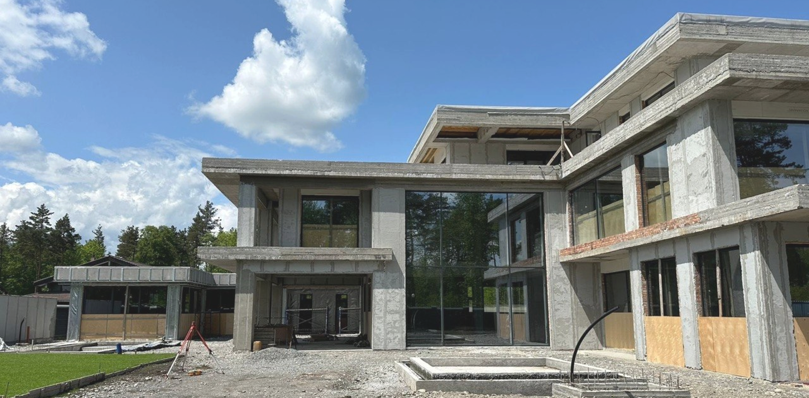
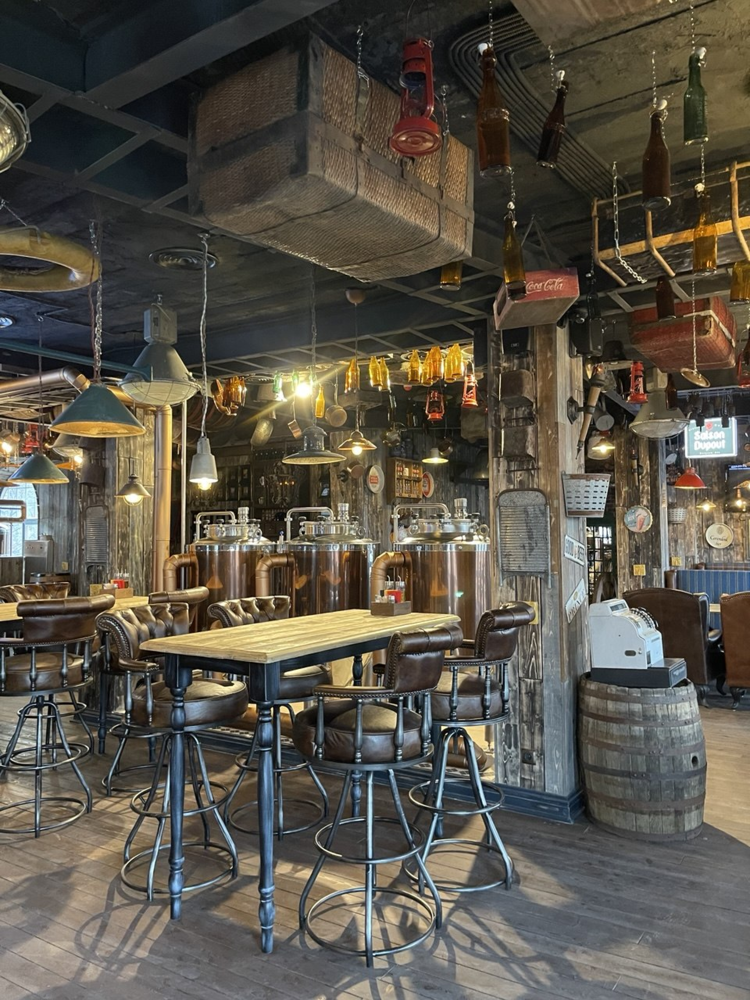
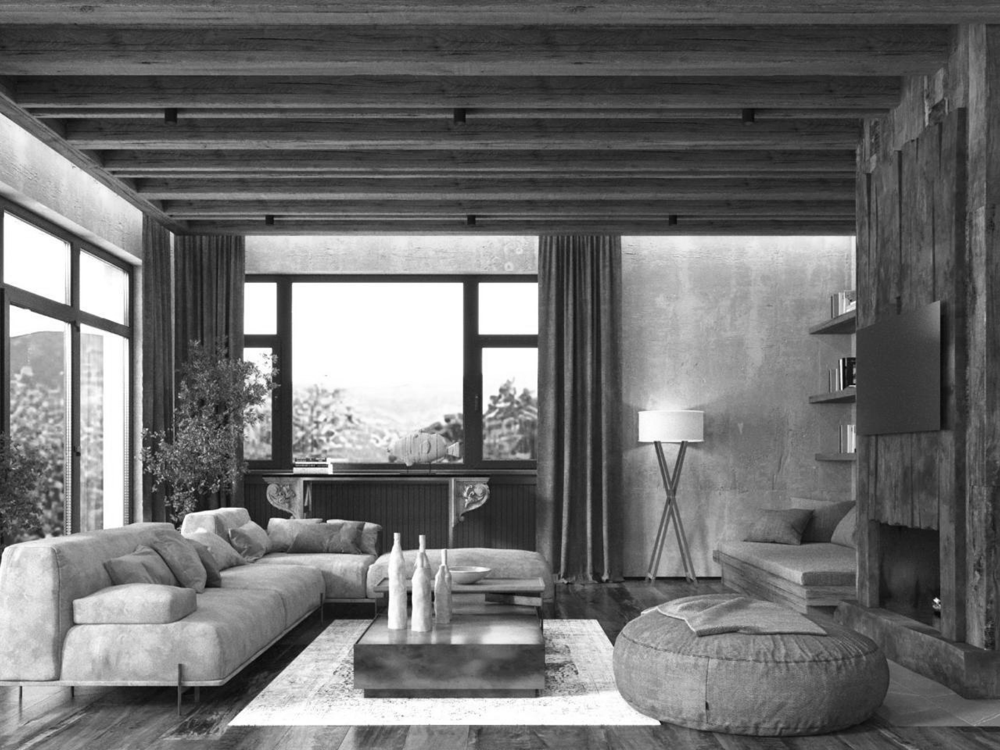

Vladikavkaz
Residence — 1,000 m²
Residence — 1,000 m²



Nina is an architect and designer holding a Master’s degree from Istituto Marangoni in Milan. She has successfully delivered over 50 projects across Russia, the CIS, and Europe. Her expertise spans from creating cozy 45 m² intimate spaces to developing skyscrapers.